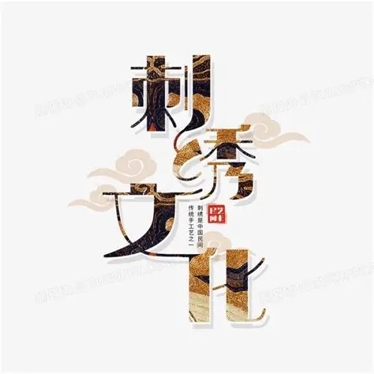
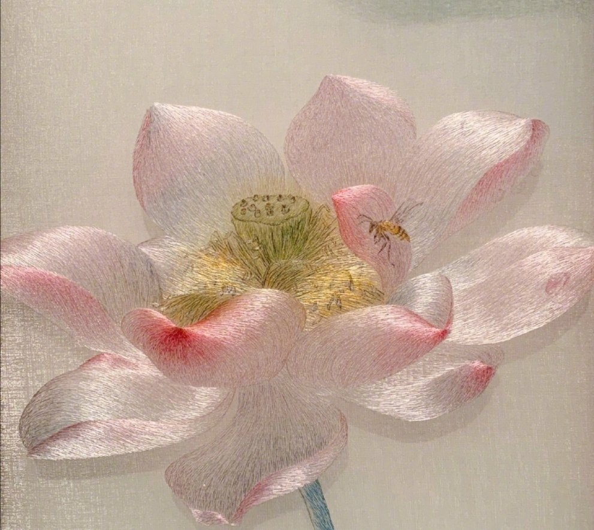
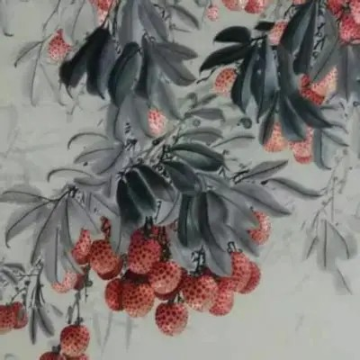
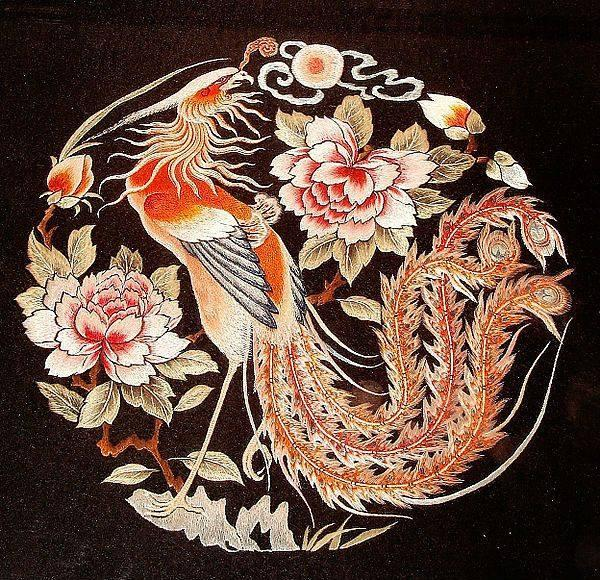
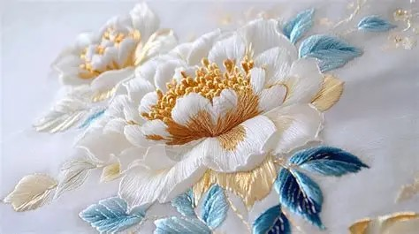

苏绣 · 一针千年，绣尽江南 国家级非物质文化遗产 | 中国四大名绣之首
苏绣，苏州地区刺绣产品的总称，2006年列入第一批国家级非物质文化遗产名录，距今已有2500余年历史，以“精细雅洁、针密线匀、逼真传神”著称，是江南文化的物质载体。
以套针、施针晕染花瓣层次，用丝线还原花瓣的通透感 用细微针法刻画花蕊与蜜蜂，实现“以针代笔、以线晕色”的效果 荷花象征高洁清雅，是江南文人审美的典型体现，也是苏绣“画绣”风格的传承
湘绣 · 以针代笔，绣绘潇湘 国家级非物质文化遗产 | 中国四大名绣之一
湘绣，是以湖南长沙为中心的刺绣产品总称，2006年列入第一批国家级非物质文化遗产名录，距今已有2000余年历史，以“以针代笔，以线晕色，狮虎逼真，质感强烈”著称，是湖湘文化的生动载体。
以鬅毛针、施针层层晕染，还原荔枝果皮的凹凸肌理与果实的饱满光泽； 用掺针、平针刻画枝叶脉络，以深浅丝线表现叶片的向背与水墨的浓淡层次； 荔枝象征红火兴旺，是湘绣“以绣入画”风格的典型体现，尽显“绣花能生香，绣鸟能听声，绣虎能奔跑，绣人能传神”的艺术魅力。
粤绣 · 彩线织锦，粤韵风华 国家级非物质文化遗产 | 中国四大名绣之一
粤绣，是以广东广州、潮州为中心的刺绣产品总称，2006年列入第一批国家级非物质文化遗产名录，距今已有1000余年历史，以“构图饱满、色彩浓烈、富丽堂皇、装饰性强”著称，是岭南文化的鲜活载体。
以垫绣、勒针晕染凤羽层次，用彩线还原羽毛的蓬松质感与光泽； 用盘金绣、钉金绣勾勒轮廓，以金银线凸显龙凤牡丹的雍容华贵； 凤凰牡丹象征吉祥富贵，是粤绣“百鸟朝凤”经典题材的体现，尽显“金碧辉煌、热烈明快”的岭南艺术特色。
蜀绣 · 针织天府，锦韵千年 国家级非物质文化遗产 | 中国四大名绣之一
蜀绣，是以四川成都为中心的刺绣产品总称，2006年列入第一批国家级非物质文化遗产名录，距今已有2000余年历史，以“针法严谨、片线光亮、针脚平齐、色彩明快”著称，是巴蜀文化的生动载体。
以晕针、铺针晕染花瓣层次，用丝线还原白牡丹的莹润质感与柔婉光泽； 用车针、掺针刻画花蕊与叶脉，实现“针脚藏锋、线色交融”的细腻效果； 牡丹象征雍容华贵，是蜀绣“花鸟小品”题材的经典体现，尽显“蜀锦刺绣，穷工极巧”的天府工艺魅力。